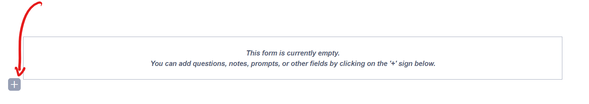
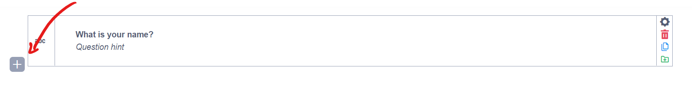
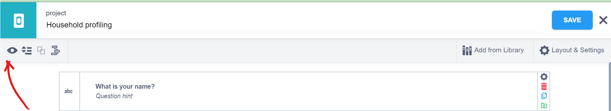
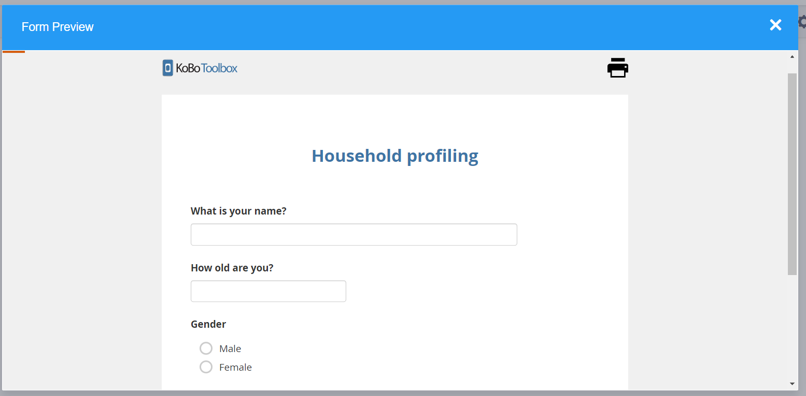

Search the knowledge base, browse our resources, and visit our forum for more detailed information
Last updated: 7 Feb 2022
Once you’ve logged in to your KoboToolbox account, you can start building your data collection project right away with our easy-to-use formbuilder. This article gives you a quick overview of how you can create a data collection project, add questions and deploy a form for data entry.
These guidelines are a basic introduction to developing and deploying forms in KoboToolbox. Visit the articles linked throughout this overview to learn more about each of these steps.
Upon logging in to your account, click the big blue NEW button at the top. You will be presented with the “Create a project: choose a source” dialog box.

Option |
Description |
|---|---|
Build from scratch |
Build a form using the KoboToolbox formbuilder |
Use a template |
Build a form using a template from the question library. |
Upload XLSForm |
Upload an XLSForm file where you have defined your questions. |
Import an XLSForm via URL |
Upload an XLSForm file from an online source such as Google Drive or Dropbox |
Click Build from scratch to start creating your form using the formbuilder.
On the ‘Project details’ dialog box that opens up, enter the relevant information about your project and then click CREATE PROJECT

Field |
Description |
|---|---|
Project Name (required) |
The title of your project |
Description (optional) |
A descriptive paragraph to make it easy to identify your project |
Sector (optional) |
The sector in which the data collection project is being deployed |
Country (optional) |
The country where the data collection project will be deployed |
You can check the last option to anonymously share the sector and country information with KoboToolbox. The data is used to help improve the KoboToolbox platform.
Once the formbuilder opens up, you can start adding your questions.
1. Click the button below the message that says “This form is empty”.  2. Type in your question text.

3. Press ENTER or click the ADD QUESTION button.
A list of question types will be shown. To learn more about question types, read the linked article.

4. Finally, select the question type from the list (see the example below)
KoboToolbox has functionality that allows you to define skip logic, validation criteria, perform calculations, add translations and more.
Let’s add the following questions:
What is your name?
How old are you?
Gender: Male; Female; Nonbinary; Prefer not to say
Steps:
1. Click the button to add a new question
2. Type: What is your name
3. Press ENTER or click ADD QUESTION
4. Choose the Text question type
5. To add the second question, click the button just below the question you just added 
6. Type: How old are you?
7. Press ENTER or click ADD QUESTION
8. Choose the Number question type
9. Finally, click the button just below the second question you added
10. Type: Gender
11. Press ENTER or click ADD QUESTION
12. Choose the Select one question type
On Option 1, type: Male.
On Option 2, type: Female
13. Click Click to add another response and type: Nonbinary
14. Click Click to add another response and type: Prefer not to say
15. Click the SAVE button at the top right of the formbuilder
The form will look as follows:

Previewing periodically while developing the form is helpful to ensure the outcome is what you expected and there there are no errors in your form or calculations before deployment and data collection.
Only the web form preview is available from the formbuilder, there is currently no preview feature for KoboCollect.
Click the preview icon on the grey toolbar to open a preview of your form.

The form we created in the Adding questions section above will display as follows:

You can press the Escape key (Esc) on the keyboard to return to the formbuilder (or click the close button on the Form Preview window).
Once you have finished developing the form, you need to deploy it to start data collection.
1. Make sure you have saved all the changes you have made to the form (If there is a * symbol on the SAVE button, you have changes that need to be saved before exiting). 2. Click the close button next to the SAVE button at the top.

3. Click the DEPLOY button.
If you don’t have any errors, a “deployed form” message will appear at the bottom left corner.
The screen will refresh to show you the current version of the form and options for data collection.
To enter data using the web form:
1. Choose a data entry method from the drop down list below the heading Collect data. For the sake of this article, we will leave the default “Online-Offline multiple submission” (learn more about the other options and configuring KoboCollect). This option opens up the Enketo Web Form, and allows you to enter multiple submissions, even while you are offline.

2. Click OPEN and a new window will open with your web form.
3. Enter data and click SUBMIT when you are finished.
After entering some records using the web form:
1. Navigate back to the KoboToolbox interface.
2. Refresh the browser window.
You will see the number of records that has been submitted on the top right of the screen:

3. To view the data submitted, click the DATA tab in the top menu.

While you are on the DATA tab:
1. Click on Downloads in the left menu.

2. Click EXPORT to generate an XLS (Excel) file using the default settings.
3. Once the file is generated and shown under the Exports table, click the Download button.

You can now open your downloaded file.
Note that clicking on the trash icon will
delete the export with its settings, not the original data.
Learn more about exporting and downloading your data in
this support article.
Did you find what you were looking for? Was the information clear? Was anything missing?
Share your feedback to help us improve this article!